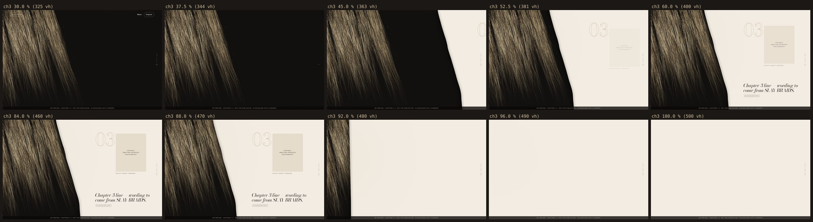
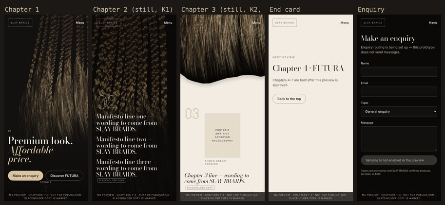

Frame sheets (final build)
Live frames use a fixed wind time (3 s) and undamped scroll, so each tile is an exact scroll position. Rendered with SwiftShader, at device-pixel ratio 1.






The private preview, the transition lab, frame sheets from the final build and every measured result, gathered for your visual review. This is the evidence for the approved phase only. It is not a request to start Chapters 4–7.
One status per test in the A26 checklist (38 tests), from the same data file as the checklist (docs/review/status.json). Automated means headless Chromium with SwiftShader (CPU WebGL) and an emulated phone: never the A26.
An automated check with explicit pass criteria passed. Still NOT TESTED on the A26.
| Test | Automated evidence | A26 |
|---|---|---|
| T1.1 Accuracy run, default tier | Tier B (the A26 default) at an A26-sized screen (384×832 @2.8125). Spec run: 8 probed frames, point P99 0.005 px / max 0.011 px, edge max 0.018 px. Dense run: 74 frames, point P99 0.005 px / max 0.24 px, edge P99 0.024 px / max 2.23 px (limit 3 px; thinnest margin seen). GPU: SwiftShader, not the A26's Mali GPU. | NOT TESTED |
| T1.2 Accuracy run, tier A forced | Tier A, spec and dense runs, desktop and mobile: worst point max 0.15 px, edge max 0.03 px; repeated in the e2e suite on every run. SwiftShader. | NOT TESTED |
| T4.1 Phone setting: Remove animations | prefers-reduced-motion emulated (M1 test): static anchor, no canvas, all text visible; static spreads checked (stills, every line visible, page drawn, no 3D). The Samsung “Remove animations” → Chrome mapping itself: not tested. | NOT TESTED |
| T4.2 Preview flag (setting OFF) | Static spreads e2e test with the reduced flag, desktop and mobile. | NOT TESTED |
| T4.3 Back to normal | Every live e2e test runs with motion on, after reduced-motion tests in the same suite. | NOT TESTED |
| T6.1 Reading order, reduced motion | Chromium's accessibility tree (what TalkBack reads), reduced motion: every heading and line present once, in this order; no decorative items; axe clean. TalkBack's speech itself: not heard. | NOT TESTED |
| T6.2 Reading order, normal motion | Live-mode tree identical to reduced motion at 0, 160, 380 and 470 vh (e2e; the test fails on the build before the fix). | NOT TESTED |
| T6.3 Headings navigation | Headings in order (h1, then four h2) in the tree, in both modes. | NOT TESTED |
| T6.4 Skip link | The skip link moves focus to the h1 (e2e, keyboard). TalkBack double-tap: not tested. | NOT TESTED |
Part of the test is covered automatically; the rest is named and NOT TESTED.
| Test | Automated evidence | A26 |
|---|---|---|
| S0.3 Access and tools | The published preview bundle loads with no failed requests, in live, lab and static modes (smoke test). Signing in and the phone's Chrome: not tested. | NOT TESTED |
| T1.3 Visual check of the guide points | CPU/GPU point agreement is measured (T1.1). The edge's visual position was reviewed on headless frame sheets and close-ups; the overlay itself not viewed on the phone. | NOT TESTED |
| T2.1 Slow pass, top to end card | Automated: M1 handoff test (perceptual Δ 1.44 on mobile, limit 2); Chapter 2 lines reveal in order; the Chapter 3 page opens and covers; render pause at full cover. The look of the sequence was reviewed on headless frame sheets. Smoothness and appearance on the A26: not tested. | NOT TESTED |
| T2.2 Slow pass back up | Automated: rendering resumes when scrolling back from full cover (I4 test). Reverse visuals: not tested. | NOT TESTED |
| T2.4 Exact positions vs the frame sheet | Reference frames exist for every position (mobile lab sheet, headless). Not compared on the phone. | NOT TESTED |
| T3.1 Load and handoff | Handoff Δ passes in emulation (M1 test 1.44, readout 1.13; limit 2). Tier choice rule is unit-tested. Visual seamlessness and absence of downgrades on the A26: not tested. | NOT TESTED |
| T3.2 Scroll pass with measurements | CLS passes (Lighthouse 0.001 mobile; scripted scroll 0). Frame-time criteria (Ch3 transition P95 ≤ 34 ms, median ≥ 45 fps) have NO valid automated evidence: SwiftShader frames saturate at 100 ms. | NOT TESTED |
| T3.4 Visual stability (watch while scrolling) | No horizontal overflow at 41 scroll positions, live and reduced, at 384 px. CLS passes. Address-bar show/hide behaviour: not tested. | NOT TESTED |
| T3.5 I6 matched still (experiment) | Simulated: matched still Δ 1.17 vs 1.13 for the standard still, so I6 stays not adopted. The decision needs the phone. | NOT TESTED |
| T5.1 Buttons and links | Menu dialog opens, closes and returns focus (e2e); CTA targets (#enquire, #next) and the skip link are tested. Tapping on the phone and the landing position after a jump: not tested. | NOT TESTED |
| T5.3 Enquiry form and keyboard | The send button is disabled and nothing is ever sent (M1 test). On-screen keyboard behaviour: not tested. | NOT TESTED |
| T5.4 Layout at every chapter | No horizontal overflow at 384 px; axe finds no WCAG 2.1 A/AA violations (static, reduced, live). Banner overlap reviewed on headless sheets only. | NOT TESTED |
| T5.6 Rotation | Emulated rotation round-trip at Chapter 1 and the Chapter 3 rest: no errors, live 3D restored in both orientations. OPEN RISK: in emulation, rotating at the Chapter 3 rest moved the scroll position to the end card (380 vh → 865 vh in landscape → 679 vh back in portrait). Real Chrome may keep the place by scroll anchoring; only the phone can tell. | NOT TESTED |
| T6.5 Menu dialog | Focus moves into the dialog, Escape closes it, focus returns to Menu (e2e). Android back gesture and TalkBack swipe containment: not tested. | NOT TESTED |
Only the device can answer these. NOT TESTED.
| Test | Automated evidence | A26 |
|---|---|---|
| S0.1 Record the device and software | Device facts: nothing to automate. | NOT TESTED |
| S0.2 Conditions | Test conditions on the phone. | NOT TESTED |
| T1.4 Accuracy after warm-up (optional) | Needs a warm phone. | NOT TESTED |
| T2.3 Fast flicks | Fast flicks: no automated equivalent. | NOT TESTED |
| T3.3 Tier A headroom (optional) | Tier A headroom on the A26: device only. | NOT TESTED |
| T5.2 Finger on the hair | The M1 pointer test is skipped on touch by design. | NOT TESTED |
| T5.5 Pinch zoom | Pinch zoom: device only. | NOT TESTED |
| T5.7 Large text | Large system font: device only. | NOT TESTED |
| T5.8 Samsung Internet (optional) | Samsung Internet: not available here. | NOT TESTED |
| T6.6 Header focus after scrolling down | TalkBack focus outline position: device only. | NOT TESTED |
| T6.7 Explore by touch (normal motion) | Explore by touch: device only. | NOT TESTED |
| C1 Performance trace of the full scroll | Needs a computer connected to the phone. | NOT TESTED |
| C2 Long-task attribution: start-up vs scrolling | Needs a computer connected to the phone. | NOT TESTED |
| C3 Memory after a full scroll | Needs a computer connected to the phone. | NOT TESTED |
| C4 Thermal state (optional) | Needs a computer connected to the phone. | NOT TESTED |
Real-device tests: all 38 are NOT TESTED; none is marked as failed. The checklist to run them: claude.ai/artifact/G8pcwwkBQxrFwJbTJK798q.
Live frames use a fixed wind time (3 s) and undamped scroll, so each tile is an exact scroll position. Rendered with SwiftShader, at device-pixel ratio 1.


The lab compiles the locked vertex shader's own source at runtime: its declarations, plus main() up to the ribbon expansion. It renders every guide point into a float texture, reads it back, and compares that with the CPU guide strand that places the page edge. It runs 30 s, scripted, with live wind and a moving pointer. Readback is every 10th frame as specified, plus a dense run with every frame. GPU here: SwiftShader.
| Viewport | Readback | Frames | Guide points | Wind · pointer | Point error P50 / P95 / P99 px | Point max px | Edge P99 / max px | Result |
|---|---|---|---|---|---|---|---|---|
| desktop 1440×900 @1x | every 10 frames | 4 | 4,983 | 0.81–1.00 pointer 0.83 in 4/4 |
0.0014 / 0.0066 / 0.0083 | 0.017 | 0.005 / 0.005 | pass |
| desktop 1440×900 @1x | every 1 frame | 13 | 4,983 | 0.50–0.91 pointer 0.99 in 13/13 |
0.0012 / 0.0035 / 0.0050 | 0.082 | 0.002 / 0.003 | pass |
| mobile 412×915 @2.625x | every 10 frames | 4 | 9,796 | 0.76–1.00 pointer 0.93 in 4/4 |
0.0010 / 0.0030 / 0.0053 | 0.007 | 0.013 / 0.015 | pass |
| mobile 412×915 @2.625x | every 1 frame | 15 | 9,796 | 0.50–0.93 pointer 0.97 in 15/15 |
0.0008 / 0.0028 / 0.0035 | 0.153 | 0.017 / 0.029 | pass |
| A26-sized, tier B 384×832 @2.8125x | every 10 frames | 8 | 9,794 | 0.76–1.00 pointer 0.86 in 8/8 |
0.0009 / 0.0036 / 0.0049 | 0.011 | 0.017 / 0.018 | pass |
| A26-sized, tier B 384×832 @2.8125x | every 1 frame | 74 | 9,794 | 0.62–1.00 pointer 0.97 in 74/74 |
0.0010 / 0.0037 / 0.0051 | 0.241 | 0.024 / 2.232 | pass |
Rows 1–4: tier A. Last two rows: tier B (the A26's default tier) at an A26-sized screen, 384×832 @2.8125x. The single 2.23 px edge sample is the thinnest margin under the 3 px limit; it comes from the edge algorithm's row switching, not from the GPU.
| Check | Result |
|---|---|
| Horizontal overflow, 41 scroll positions, live and reduced motion | pass: page never wider than 384 px |
| Rotation round-trip at Chapter 1 and the Chapter 3 rest | pass: no errors, live 3D restored in both orientations Open risk: at the Chapter 3 rest the scroll position moved to the end card (380 → 865 vh in landscape). Real Chrome may keep the place; NOT TESTED on a phone. |
Limits: P99 ≤ 2 CSS px and max ≤ 3 CSS px, applied to the points and to the edge itself. The same check runs in the e2e suite. Real-GPU accuracy: NOT TESTED. Tap “Run accuracy test” in #lab-transition on a device.
For every shown line, at each position and wind phase: the line's box is captured with the type hidden, and the pixel at the 95th luminance percentile behind it is taken. The line's colour is composited over that pixel at its actual opacity, and the WCAG ratio is computed. “Past” lines are the dimmed earlier lines (desktop only; on mobile only the active line shows).
| Viewport | Judged | Worst | Worst active | Worst past | Where | ≥ 7:1 |
|---|---|---|---|---|---|---|
| desktop 1440×900 | 75 | 8.76:1 | 16.52 | 8.76 | line 1 (past) at 190 vh, wind 0 s | pass |
| desktop 1920×1080 | 72 | 8.81:1 | 16.74 | 8.81 | line 1 (past) at 190 vh, wind 0 s | pass |
| mobile 412×915 | 39 | 16.04:1 | 16.04 | — | line 3 (active) at 217 vh, wind 0 s | pass |
| mobile 390×844 | 39 | 16.05:1 | 16.05 | — | line 3 (active) at 217 vh, wind 2.1 s | pass |
Run on the final build except for one later change that cannot affect Chapter 2: the performance readout's fixed size (shown only with #perf). 225 samples judged; 24 caught mid-fade (a line easing in or the chapter fading out) are kept in the data file but not judged. Data: docs/perf/ch2-contrast-*.json.
| Real devices | Frame P50/P95/P99 | Median fps | Ch3 transition | Long tasks | LCP | CLS | Handoff Δ | Edge accuracy (lab) |
|---|---|---|---|---|---|---|---|---|
| Recent iPhone (Safari) | NOT TESTED | NOT TESTED | NOT TESTED | NOT TESTED | NOT TESTED | NOT TESTED | NOT TESTED | NOT TESTED |
| Mid-range Android (Chrome) | NOT TESTED | NOT TESTED | NOT TESTED | NOT TESTED | NOT TESTED | NOT TESTED | NOT TESTED | NOT TESTED |
| Low-end Android (Chrome) | NOT TESTED | NOT TESTED | NOT TESTED | NOT TESTED | NOT TESTED | NOT TESTED | NOT TESTED | NOT TESTED |
| Laptop, integrated GPU | NOT TESTED | NOT TESTED | NOT TESTED | NOT TESTED | NOT TESTED | NOT TESTED | NOT TESTED | NOT TESTED |
| Desktop, dedicated GPU | NOT TESTED | NOT TESTED | NOT TESTED | NOT TESTED | NOT TESTED | NOT TESTED | NOT TESTED | NOT TESTED |
No device or computer is connected to this session, so nothing here was measured on real hardware. Protocol: docs/real-device-test-protocol.md (M2 addendum). Open the preview with #perf and #lab-transition on each device and paste the copied results.
| Simulated (SwiftShader, CPU) | Desktop 1440×900 | Mobile 412×915 @2.625x |
|---|---|---|
| All frames P50 / P95 / P99 ms | 100.0 / 100.0 / 100.0 10 fps median · n 341 | 100.0 / 100.0 / 100.0 10 fps median · n 351 |
| Chapter 1 | 100.0 / 100.0 / 100.0 10 fps median · n 59 | 100.0 / 100.0 / 100.0 10 fps median · n 69 |
| Chapter 2 | 100.0 / 100.0 / 100.0 10 fps median · n 86 | 100.0 / 100.0 / 100.0 10 fps median · n 81 |
| Chapter 3 | 100.0 / 100.0 / 100.0 10 fps median · n 196 | 100.0 / 100.0 / 100.0 10 fps median · n 201 |
| Chapter 3 transition only | 100.0 / 100.0 / 100.0 10 fps median · n 98 | 100.0 / 100.0 / 100.0 10 fps median · n 104 |
| Page-edge compute ms (CPU) | 2.4 / 5.8 / 11.8 417 fps median · n 98 | 2.8 / 5.8 / 6.9 357 fps median · n 104 |
| Long tasks (count · total · max ms) | 343 · 335569 · 1754 | 352 · 357862 · 2039 |
| LCP ms (in this run) | 88 | 176 |
| CLS (in this run) | 0.0002 | 0 |
| Handoff Δ raw / perceptual (0–255) | 4.4 / 1.1 anchor_v1-landscape-1920.avif vs 1440×900 live | 3.31 / 1.13 anchor_v1-portrait-1440.avif vs 824×1830 live |
| I6 matched still: handoff Δ | — | 4.63 / 1.17 824w for target 824w |
SwiftShader renders WebGL on this container's CPU. The scene clamps each frame's time at 100 ms, so frame times saturate at 100 ms here. These rows show that the code runs and how its CPU-side parts scale. They are not evidence about any GPU or phone.
| Profile | Perf | A11y | Best pr. | LCP ms | TBT ms | CLS | Speed index |
|---|---|---|---|---|---|---|---|
| mobile-auto | 63 | 100 | 100 | 904 | 17587 | 0.001 | 6864 |
| mobile-static | 99 | 100 | 100 | 903 | 109 | 0.001 | 1839 |
| desktop-auto | 64 | 100 | 100 | 248 | 4271 | 0 | 2505 |
TBT on the live profiles is high because Lighthouse's own Chrome renders the 3D on the CPU. The static profile (tier C, no three.js) shows the page itself. M1 baseline: LCP 905 ms mobile, accessibility 100.
Initial JS 131.8 KB gzip (M1: 131.1 KB) · lazy JS 325.4 KB gzip (M1: 305.5 KB) · CSS 6.4 KB gzip. The new chapter code loads with the scene. The lab (about 8 KB) loads only with #lab-transition. The static spreads (about 4 KB) never load three.js.
| Suite | Passed | Failed | Skipped | Note |
|---|---|---|---|---|
| Unit (Vitest) | 36 | 0 | 0 | includes the anchor_v1 foundation lock test, 6/6 |
| M1 e2e (tests/e2e/experience.spec.ts, unmodified) | 15 | 0 | 1 | skipped: pointer test on mobile (touch), skipped by design since M1 |
| M2 e2e (tests/e2e/chapters.spec.ts) | 20 | 0 | 0 | structure, skip link, modal menu, axe ×3, accessibility tree identical live vs reduced at 4 positions (new; fails on the pre-fix build), chapter states, I4 pause/resume, page-edge accuracy, static spreads; desktop + mobile |
final with TalkBack fix (out/index.html md5 9c3bbabfc03425d0f2beb48509508ebb). M1 handoff test: desktop raw 4.40 · perceptual 1.19 /255 (M1: 4.40 / 1.19); mobile raw 3.18 · perceptual 1.44 /255 (M1: 3.18 / 1.44). Log: docs/perf/e2e-final.log.
| Change | Where | Notes | |
|---|---|---|---|
| I1 | Camera keys K1, K1b, K2 + one continuous timeline | chapters/cameraTimeline.ts | K0 read from the locked framing. Hermite with Catmull-Rom tangents; unit tests prove no jumps and continuous speed. K2 adds an optional camera roll (new optional field; M1 keys have none). |
| I2 | Guide strand | chapters/guideStrand.ts | Read-only use of the scene's buffers. Exact float32 copy of the shader displacement, same matrices as the frame just rendered. |
| I3 | SVG page | chapters/paper.ts | Above the canvas, below the type. 1 px champagne highlight (35 %), blurred paper shadow, blurred contact shadow, spill at the projected key pool. |
| I4 | Render pause | chapters/live.ts | Only while the page or an opaque section covers the whole screen; resumes on scroll. e2e-tested. |
| I5 | Ch2 / Ch3 stills | render-chapter-stills.mjs · public/chapters | From the locked scene, wind 0, own manifest with the static page edge. anchor_v1 untouched. |
| I6 | Density-matched still | encode-matched-stills.mjs · #still-matched | Not adopted. Simulated Δ did not improve; awaiting real phones. |
| I7 | Metric-matched fallback fonts | globals.css | size-adjust / ascent / descent from the font files; hero width in em. Hero layout shift 0.047 → 0.0002 (trace). |
| Decision | Why |
|---|---|
| K2 frames the cascade's lit upper boundary, rolled 25° | At the tips the hair lies outside the locked key pool and reads as black, so the page looked cut around an empty shape. On the lit boundary it meets visible strands over the full height. |
| “Away” closes the page over the hair until it covers the screen | Sliding a hair-shaped page upwards showed a cut-out travelling away from its hair. The edge now relaxes to a straight line as it closes; the ivory end card continues the page. This is the full-cover state I4 was specified for. |
| The page edge follows the outer clump | The 6th-furthest fibre per row, not the single furthest stray. Strays pass under the page. Tips are weighted by the shader's own tip fade, so the edge never jumps when a tip crosses a row. |
| Chapter frames fixed, driven by the camera's clock; one-screen Chapter 3 tail | A 60 vh tail was tried and rejected: the end card rose across the hair while the page was still closing. |
| No paper texture of its own | The site-wide grain lies over the page. The texture image had become the LCP element (6.7 s); removing it restored 0.9 s. |
| Mobile headline scrim pinned and faded on the scroll clock | Its bottom edge was travelling up across the hair as a hard line. |
| Chapter 2 dimmed lines: 0.62 → 0.72 opacity | The contrast check measured 6.71:1 at 0.62, below the 7:1 criterion. At 0.72 the worst case is 8.76:1; the active line stays visibly brighter (16.5:1). |
| Performance readout has a fixed size | It grew as results arrived and its own layout shifts were counted in the CLS it reports (0.0137 in the simulated mobile run). The page itself: 0.0006. |
| TalkBack fix: off-screen chapter frames hidden with opacity, not visibility | Found while preparing the A26 protocol: in live mode, Chapter 2–3 headings and text left the accessibility tree whenever the chapter was off screen, so screen readers skipped them. Now the tree is identical at every scroll position and in reduced motion (new e2e test; it fails on the earlier build). Visuals pixel-identical before/after (34 frames). |
| Logo slot shows plain text “SLAY BRAIDS” | Dashed placeholder box, accessible name “SLAY BRAIDS, home”. Not a recreation of the logo; the file is still pending. |
Not changed: geometry, shaders, lighting uniforms, the anchor framing (K0, FOV, key light, key pool), tier A settings, anchor_v1 files. No Chapters 4–7, no recolouring, no deployment, no paid services, no product claims. All copy, the portrait and the logo are marked placeholders.
From the technical assessment (claude.ai/artifact/VXfMtBQUMRiXXmJ7mDiYx5).
None.
| Date | Revision |
|---|---|
| 26 Nov 2026 | First publication: final build, frame sheets, transition lab, Chapter 2 contrast, performance, tests, change register. |
| 27 Nov 2026 | TalkBack fix added to the change register and tests (M2 e2e 18 → 20). Tier-B accuracy, overflow and rotation evidence at an A26-sized screen. Validation status split into automated / partial / none / real-device NOT TESTED. Provisional approval of Chapters 1–3 recorded as the technical and design baseline, excluding public release. |
Earlier versions remain in this page's version history. Generated 2026-11-27 10:10 UTC from docs/perf/*.json and docs/review/status.json by scripts/review-page.mjs.